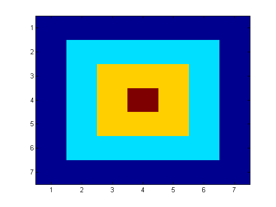

Exercise 1
Contents
- 1.1 Create a column vector of the integers 1 to 5
- a) by entering it manually
- b) by using the colon (:) operator
- 1.2 Create a 5-by-5 array where each element is equal to its row number:
- a) using row/column-indexing with the colon operator to assign values
- b) using the vector created in step 1
- 1.3 Create the following array A:
- 1.4 Display the matrix created in 3 with imagesc:
1.1 Create a column vector of the integers 1 to 5
a) by entering it manually
t=[1;2;3;4;5]
t =
1
2
3
4
5
b) by using the colon (:) operator
t=(1:5)'
t =
1
2
3
4
5
1.2 Create a 5-by-5 array where each element is equal to its row number:
a) using row/column-indexing with the colon operator to assign values
A=zeros(5); A(1,:)=1; A(2,:)=2; A(3,:)=3; A(4,:)=4; A(5,:)=5
A =
1 1 1 1 1
2 2 2 2 2
3 3 3 3 3
4 4 4 4 4
5 5 5 5 5
b) using the vector created in step 1
A=[t t t t t]
A =
1 1 1 1 1
2 2 2 2 2
3 3 3 3 3
4 4 4 4 4
5 5 5 5 5
1.3 Create the following array A:
0 0 0 0 0 0 0
0 1 1 1 1 1 0
0 1 2 2 2 1 0
0 1 2 3 2 1 0
0 1 2 2 2 1 0
0 1 1 1 1 1 0
0 0 0 0 0 0 0A=zeros(7); A(2:6,2:6)=1; A(3:5,3:5)=2; A(4,4)=3
A =
0 0 0 0 0 0 0
0 1 1 1 1 1 0
0 1 2 2 2 1 0
0 1 2 3 2 1 0
0 1 2 2 2 1 0
0 1 1 1 1 1 0
0 0 0 0 0 0 0
1.4 Display the matrix created in 3 with imagesc:
imagesc(A)